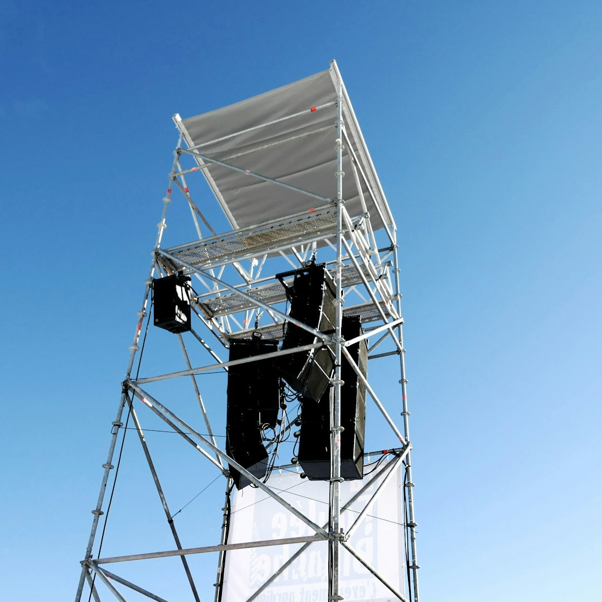

Bartholomew "Bart" Pruss · Senior Cataloguer · Field Report
On Objects That Are Thiccc by Intention, Not Necessity
This week's entries include a novelty domino, a stack of pancakes, and a concert PA stack. Bartholomew Pruss has reviewed them, and has arrived at a position he finds professionally uncomfortable.

The Fault Line the Catalogue Has Been Avoiding
There is a distinction the catalogue has, to its credit, largely avoided naming. Naming it creates obligations. Obligations require policy. Policy requires a working group, and the last working group produced three conflicting memos and the incident with the Buick entry, which I will not revisit here. Nevertheless, this week's submissions have made the distinction unavoidable, and I am putting it on the record.
The distinction is this: some objects are thiccc because their function demands it. Others are thiccc because someone decided they should be. The first category is the heritage of this publication. The second is, depending on which section of the [Style Guide](/about/style-guide/) you consult, either a valid subcategory or a classification error we have been accumulating since approximately 2016.
What the Road Roller Understands
Consider the Thiccc Road Roller. A standard tandem vibratory unit weighs between 8 and 14 tonnes. Its forward drum is typically 1.5 metres in diameter and nearly as wide as the machine itself. It is thiccc in the way that a load-bearing wall is thiccc: remove the girth and the function collapses. The compaction force is a product of mass. The mass is the machine. There is no thinner version of this object that remains itself.
This is the heritage category. The Bagger 288 belongs here. The Liebherr T 282B, which I catalogued in 1991 and which remains the publication's most rigorously argued entry, belongs here. The girth is structural, in the engineering sense and in the conceptual one. The object could not be otherwise.
The Domino, the Pancake, and the Question of Chosen Girth
The Domino, Giant Novelty is a different matter. A standard domino is 48 millimetres long, 24 millimetres wide, and 8 millimetres thick. A giant novelty domino scales these proportions upward, sometimes to 600 millimetres or beyond, for the purpose of being knocked over more satisfyingly, or for use in promotional photography, or for reasons the submitter did not fully articulate in the accompanying notes. The girth here is not a structural requirement. It is the stated purpose. The object is thiccc because it was built to be, and for no reason beyond that.
The Stack of Pancakes presents a third case. A short stack at a standard American diner runs to approximately 75 millimetres across three cakes; a competitive or novelty stack can reach 300 millimetres before structural failure becomes the primary editorial concern. Each individual pancake is not thiccc. The thicccness is a property of the arrangement, not the object. This is thicccness by accumulation, which is distinct from thicccness by construction, and the catalogue's submission form has no field for this distinction. I raised the matter in a memo to the records desk in April. The memo was acknowledged. Nothing followed. I have retained a copy.
I want to be precise about what I am not arguing. I am not arguing that the domino or the pancake stack are unworthy of the catalogue. I have filed no formal objection, though I reserve the right. I am arguing that they belong to a different drawer than the road roller, and that the catalogue, if it continues accepting both without comment, will eventually lose the ability to explain why either belongs.
On Notation, and What the Junior Cataloguer Will Say About It
Per [Style Guide](/about/style-guide/) section II.3, all entries are to be evaluated on the basis of 'girth relative to the object's reference class, without prejudice as to the reason for that girth.' I wrote that sentence in 1991, the same year I wrote the Liebherr entry, and I wrote it because the alternative was a classification debate that would have consumed the rest of the decade. I stand by the sentence as a practical instrument. I no longer believe it is sufficient.
What I am proposing, informally and without yet filing a formal amendment, is a notation system. Not a separate category. A notation. An asterisk in the entry footer indicating whether the girth is structural, accumulative, or chosen without functional basis. The Junior Cataloguer will object that this complicates the reader experience. The Junior Cataloguer's opinion on this matter will be noted and set aside. I will file the formal proposal Thursday afternoon, to Margie Whitmore-Hessian, with a copy to the records desk.
The giant novelty domino deserves to be in the catalogue. It also deserves to be correctly understood. The editorial board recommends consulting section II.3 and sitting with the discomfort.
A new entry every morning. Get it delivered.